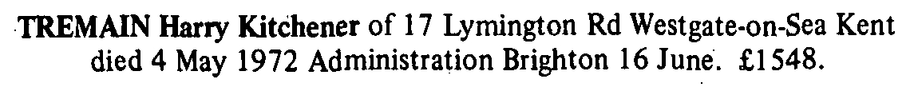

Harry Kitchener Tremain 1915 - 1972
[ Home ] | [ Calendar ] | [ Surnames Index ] | [ Family History ]Harry Tremain, the husband of Violet Lilian Spratt (the first cousin once-removed on the father's side of Nigel Horne), was born in Thanet, Kent, England on Aug 30, 19151,2,3 and. He married Violet (with whom he had 2 surviving children Richard Harry William and Colin L) at All Saints Church, Birchington, Kent, England on May 6, 19464.
Throughout his life, Harry lived in several places: at 59 Westfield Road, Margate, Kent on Sep 29, 19391; at 10 Southwold Pl, Westgate, Kent in 19555; and at 17 Lymington Road, Westgate, Kent in 19656 and in 1972. During 1938, he was serving in the army (regiment: The Royal Regiment Of Artillery; Service number: 1549894 16 Lt Anti-Aircraft Regt RA).
He died on May 4, 1972 in Thanet3.
Citations
- 1939 Register - Findmypast (was recorded at this address)
- England & Wales births 1837-2006 - Findmypast
- England & Wales deaths 1837-2007 - Findmypast
- England & Wales marriages 1837-2008 - Findmypast
- 1955 Kelly's Thanet Directory
- 1965 Kelly's Thanet Directory
Media
Harry Tremain - probate

1965 Kelly's Thanet Directory

1955 Kelly's Thanet Directory

England & Wales deaths 1837-2007 - BMD/D/1972/2/AZ/001190/035
England & Wales births 1837-2006 - BMD/B/1915/4/AZ/001337/069
England & Wales marriages 1837-2008 - BMD/M/1946/2/AZ/001466/065
1939 Register - TNA/R39/1751/1751G/010/10
Royal Artillery attestations 1883-1942 - GBM/ROYALART/416797
World War 2 Allies Collection - WW2/03446683
Family Tree

Generated by ged2site. Last updated on Nov 13, 2024